Before tightening left; approved native-solved tightening candidate right. Actual unchanged USDZ geometry and exact stored route caches, transformed by each canonical pose. Each pair shares scale and centers on the body. Detail views show the board and nearby cord; full views retain the complete fixed-support lead. Native z-buffer front/side/top projections with true occlusion; these are technical views, not app screenshots. The terminal remains at the actual front floor opening. No unseen connection is inferred.
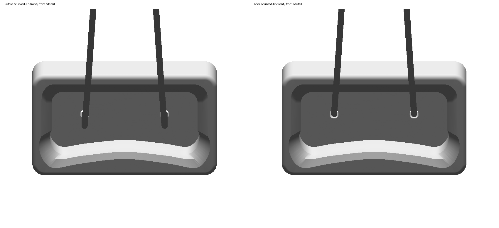
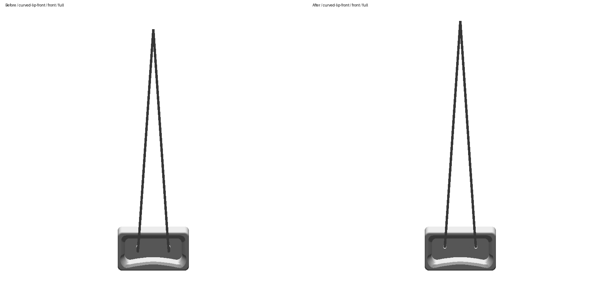
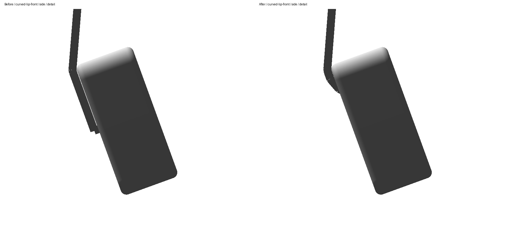
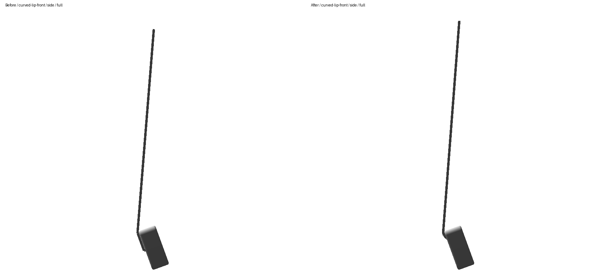
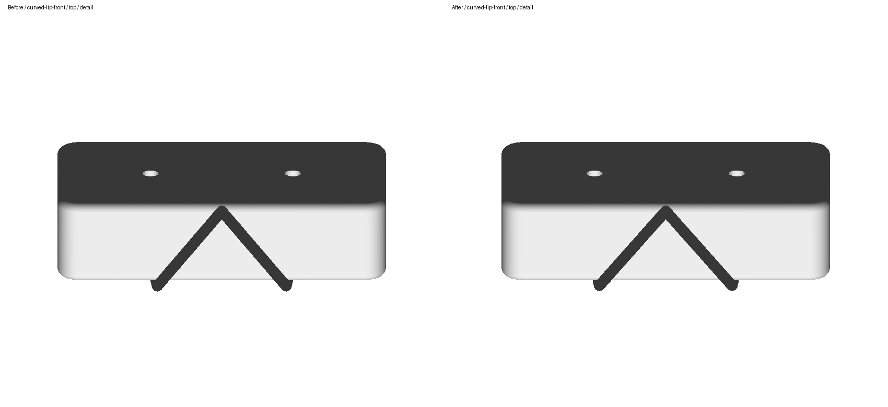
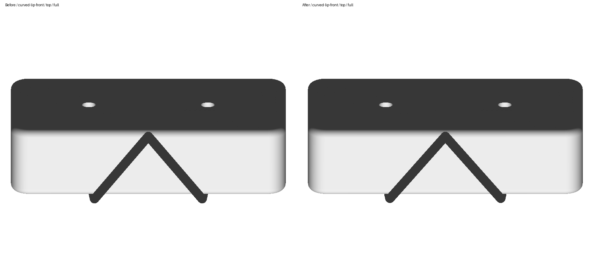
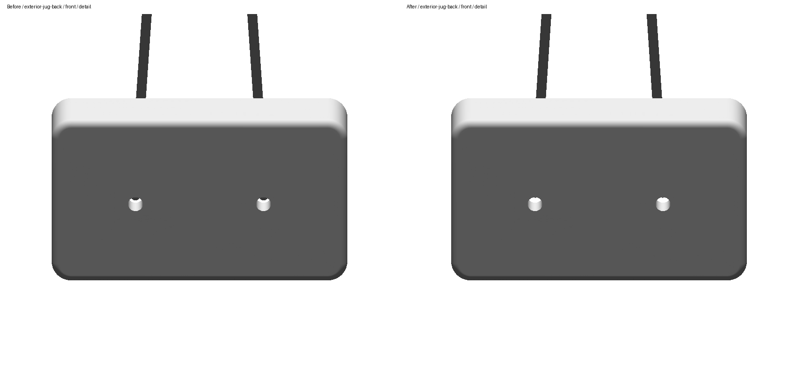
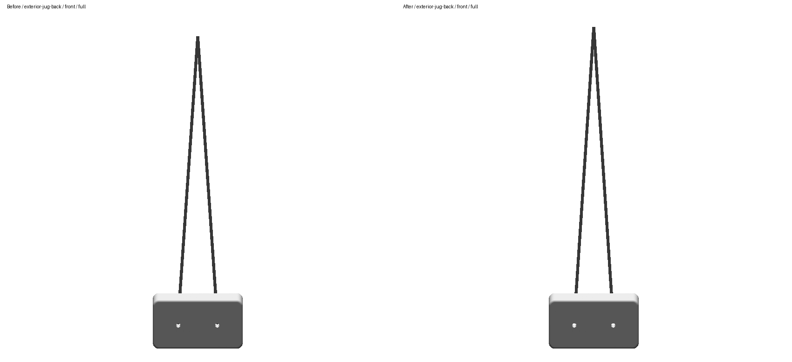
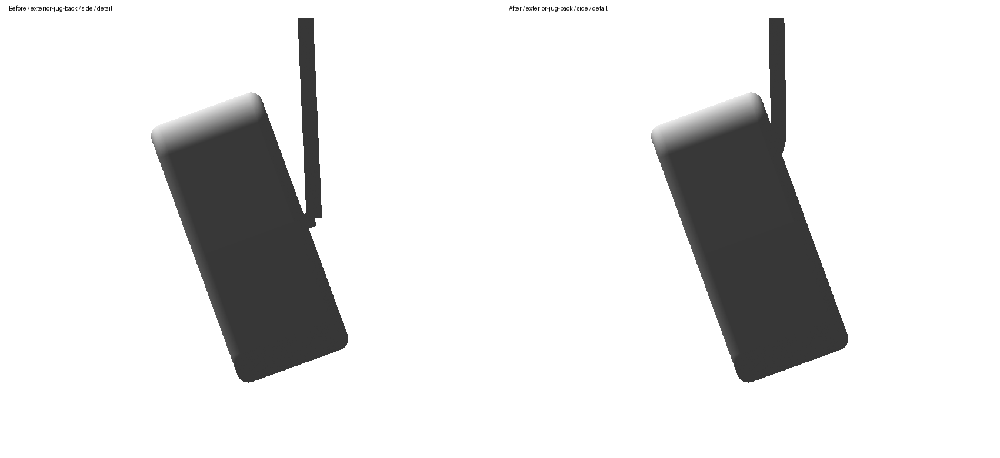
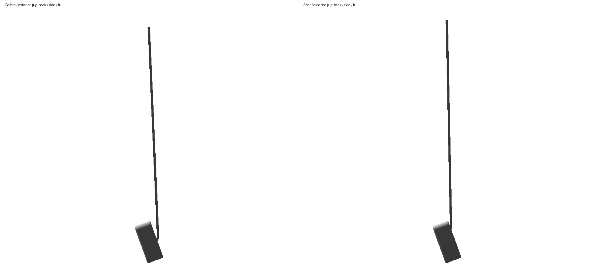
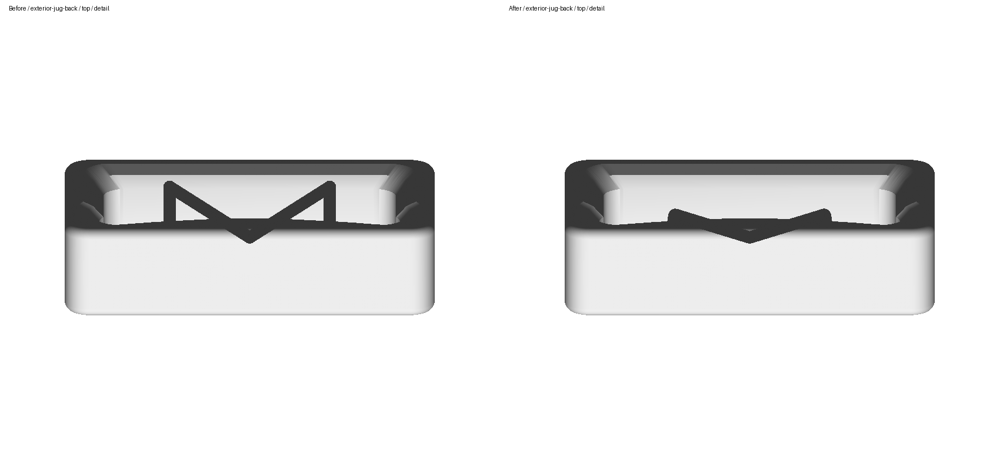
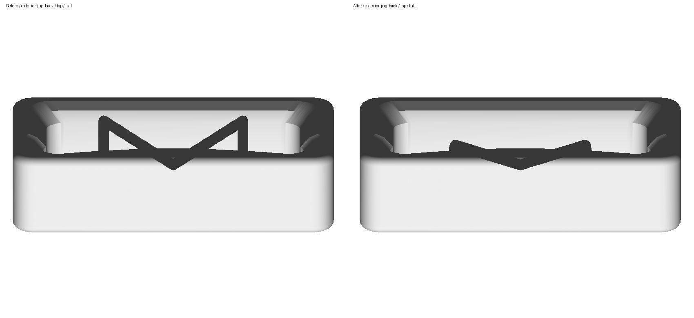
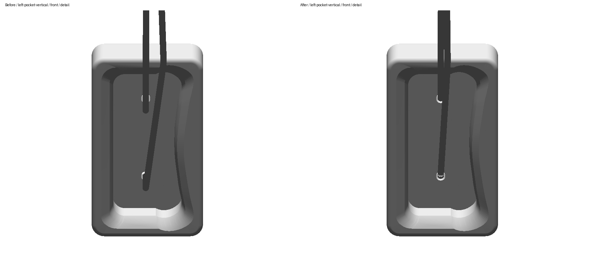
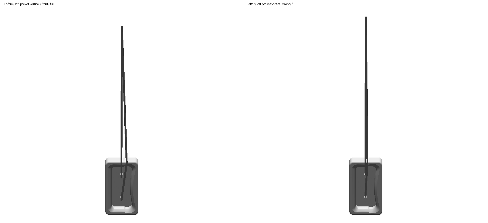
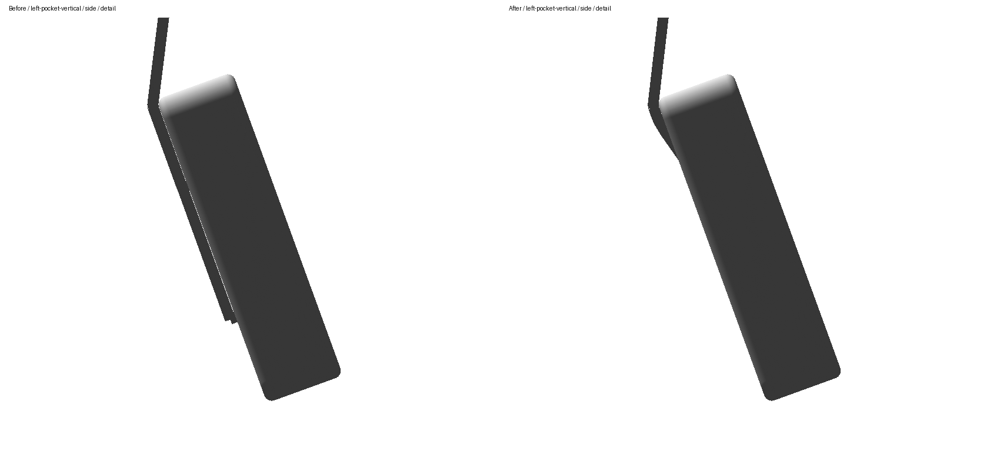
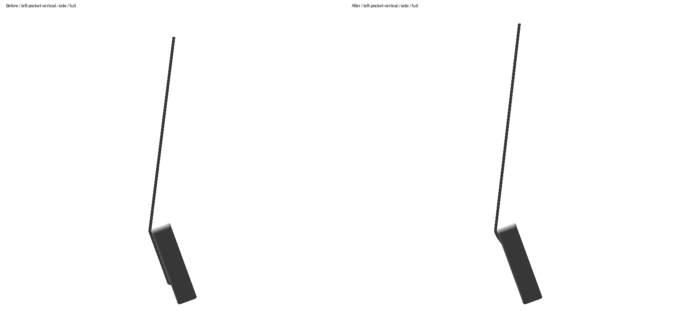
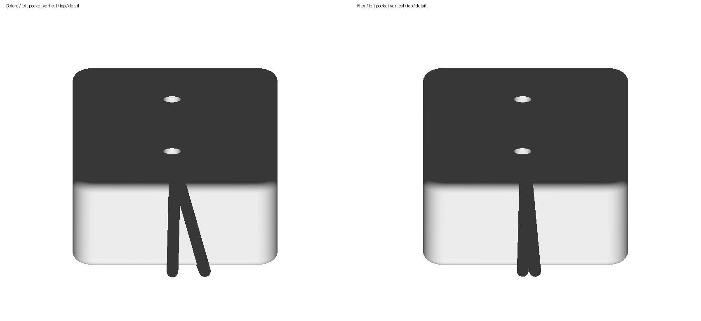
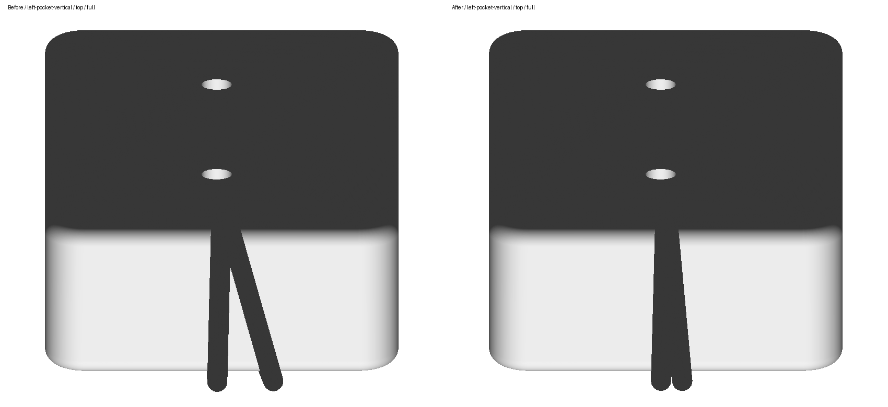
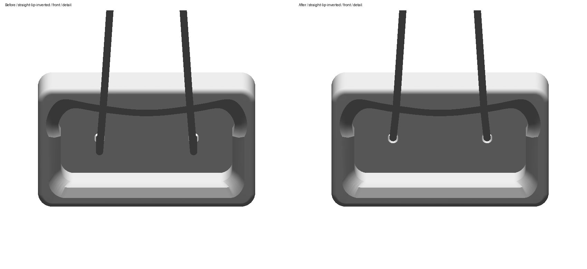
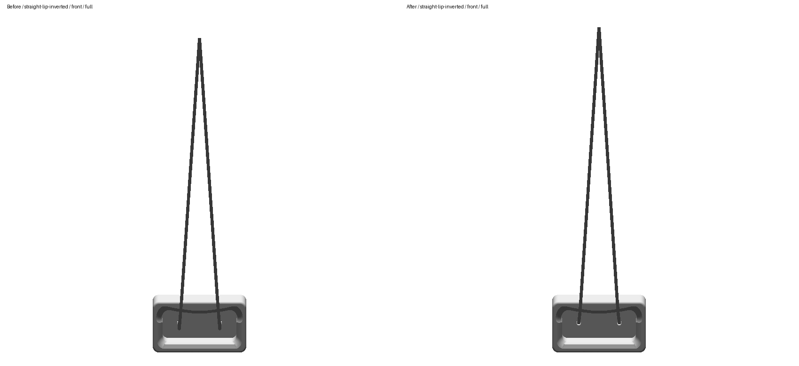
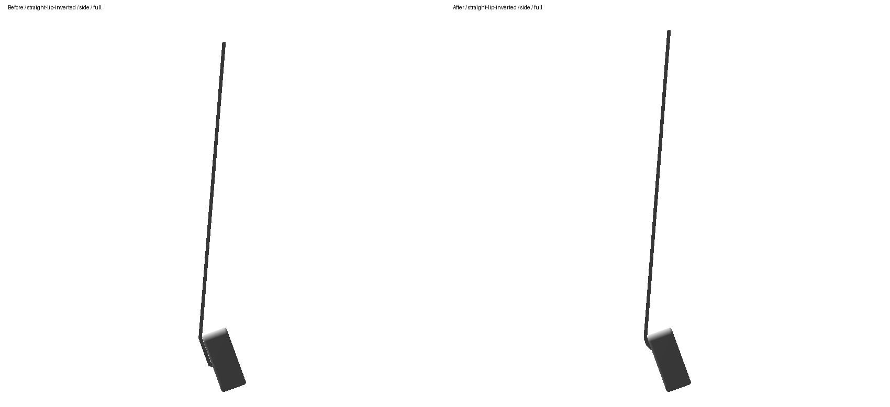
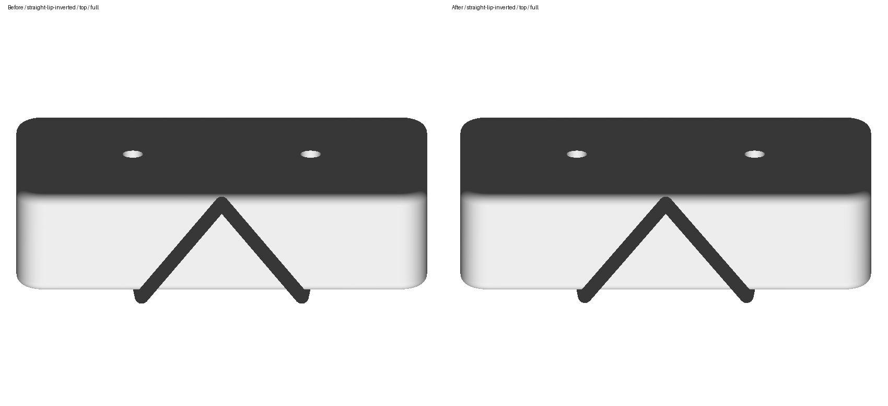
Comparison notes and best 90° views · Render hashes and common viewport bounds · Preview inspection report · Immutable before snapshot